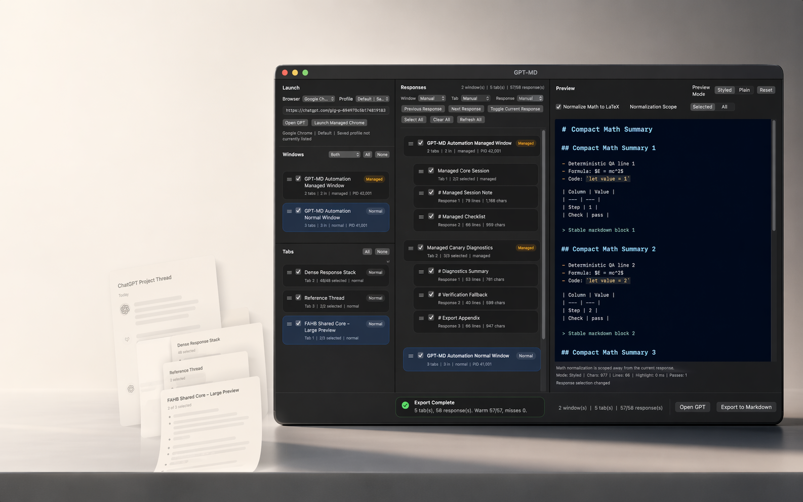
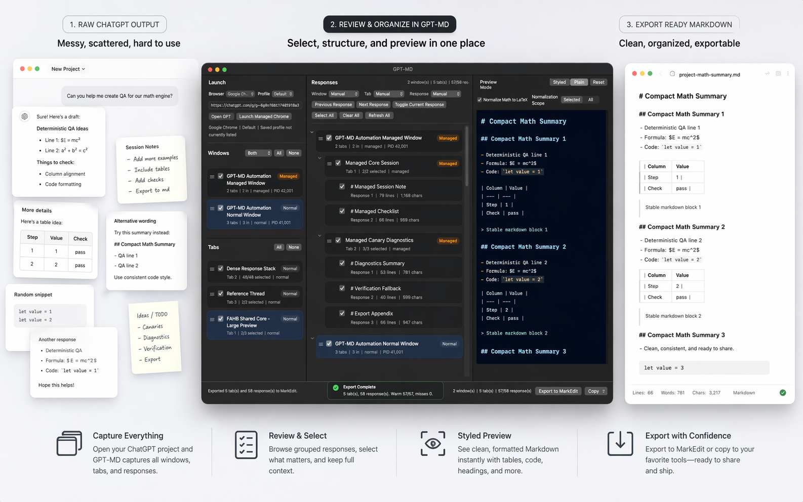

Select only what matters
Work from ChatGPT project output without dragging every answer into the final document.
Native macOS app
Scan Chrome ChatGPT tabs, select the responses you want, normalize math when it helps, edit the preview, and export clean Markdown to MarkEdit without rebuilding the same notes by hand.

What
GPT-MD is built for people who gather research, drafts, study material, and project output in ChatGPT but do not want to copy one answer at a time into a Markdown editor.
The app keeps the workflow narrow: find the supported browser material, select the responses worth keeping, preview and clean the Markdown, then send the result into a normal Mac writing workflow.
Work from ChatGPT project output without dragging every answer into the final document.
Use the preview and editing step to catch bad structure before the export becomes your source of truth.
Send clean Markdown to MarkEdit for the writing, citation, versioning, and cleanup work that comes next.
Workflow
Start from the browser sessions where the source material already lives.
Keep the useful answers and leave behind the drafts, duplicates, and side trails.
Review the Markdown shape first, with math cleanup available when mixed formatting needs help.
Open the final Markdown in a Mac editor instead of keeping your notes trapped in a browser thread.

Proof
Control
Choose which responses become part of the export instead of treating the whole conversation as one undifferentiated block of text.
Result
Preview the Markdown before it moves downstream, then keep writing in MarkEdit or another Markdown-first workflow.
Buy
Personal License
One-time purchase for GPT-MD.
The real checkout is live at medout.lemonsqueezy.com/checkout/buy/40174261-ca0c-464d-b044-39bebae435b0.
Support email: worldpresident1030@gmail.com.
Legal
Local processing, supported browser metadata, diagnostics, and third-party checkout are documented in the policy draft.
Open Privacy PolicySale terms cover the software license, delivery, compatibility, refunds, and prohibited use in the source draft.
Open Terms of SaleThe proof page summarizes the launch-readiness evidence behind the export workflow.
Open Proof Overview